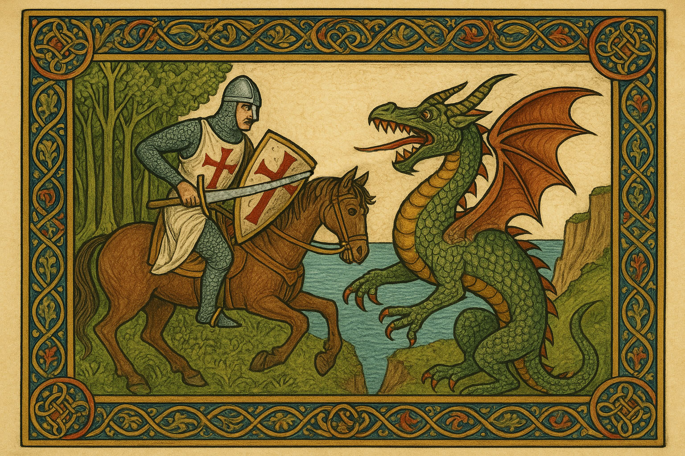
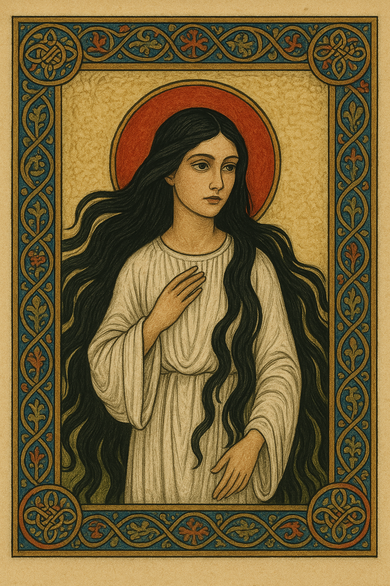

Campaign 4: Eastern Shores
Campaign Primer
Permitted Classes
Downtime, Carousing, and Renown
Overland Travel
Map of Lykasia
Map of the Witch Coast
Gailach O'Affrid- A Witchfolk Nursery Rhyme
A Found Diary
